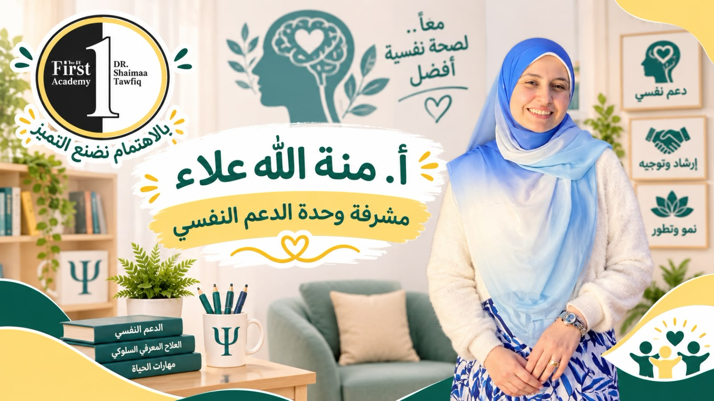
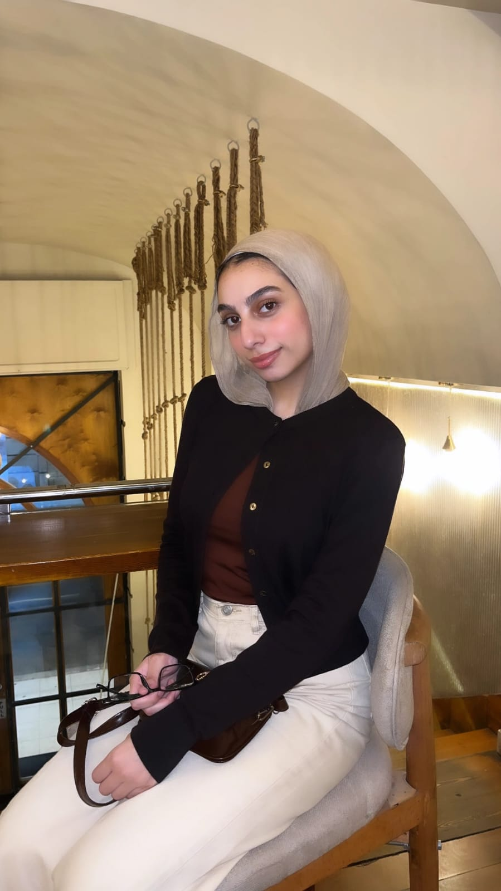

فرست للدعم النفسي
مش كل حاجة الطفل حاسس بيها بيقدر يقولها بالكلام... إحنا بنسمع اللي جواه.

أ. منة الله علاء العزب
⭐ مشرفة وحدة الدعم النفسي🎓 المؤهلات العلمية والتدريبية
- ليسانس علم نفس – جامعة الأزهر (2023).
- دورة في أخلاقيات مهنة العلاج النفسي – الجمعية المصرية للعلاج السلوكي المعرفي (2026).
- دورة الأسس العلمية في First Academy للتربية الخاصة والعلاج النفسي (2024).
- كورس تخاطب – مركز كورنيل للتدريب (2024).
- تدريب في مستشفى أبو العزائم للطب النفسي وعلاج الإدمان (2022).
- تدريب في مركز الإبداع للتخاطب والإرشاد النفسي (2021).
- تدريب في مركز الطفل التخصصي للتربية الخاصة (2020).
- كورس مبادئ وأساسيات العلاج النفسي (2020).
- البرنامج التدريبي تميز لتأهيل ودراسة سوق العمل (2015).
أهتم بالتقييم النفسي وفهم احتياجات الحالات بصورة شاملة، والعمل على إعداد خطط تدخل علاجية تتناسب مع طبيعة كل حالة، بالاعتماد على مبادئ وفنيات العلاج المعرفي السلوكي (CBT) والعلاج الجدلي السلوكي (DBT) والعلاج بالقبول والالتزام (ACT).
لدي خبرة في العمل مع الأطفال والمراهقين وذوي الاحتياجات الخاصة، تشمل تطبيق الاختبارات والمقاييس النفسية، وتقديم جلسات الدعم النفسي.
كما أعمل على دعم النمو النفسي والسلوكي للأطفال، ومساعدتهم على تطوير مهاراتهم وقدراتهم، بما يتناسب مع احتياجاتهم الفردية ومراحلهم العمرية.
💼 الخبرة العملية
أخصائية نفسية – The First Academy للتربية الخاصة والعلاج النفسي
شملت طبيعة العمل:
- التقييم النفسي وتطبيق الاختبارات والمقاييس النفسية للأطفال والمراهقين.
- إعداد الخطط العلاجية وفقًا لاحتياجات كل حالة باستخدام فنيات العلاج المعرفي السلوكي.
- تقديم جلسات الدعم النفسي والتدخلات النفسية للأطفال والمراهقين وذوي الاحتياجات الخاصة.

هدير محمد
⭐ أخصائية دعم نفسي في فرعي محرم بك والعجمي🎓 المؤهلات
- حاصلة على بكالوريوس علم النفس – جامعة الإسكندرية
- حاصلة على دورة الأسس العلمية في التربية الخاصة
- كورسات متخصصة في العلاج المعرفي السلوكي (CBT)، والعلاج السلوكي الجدلي (DBT)، وتحليل السلوك التطبيقي (ABA)
خبرة عملية في مجال الدعم النفسي، مع الاهتمام بتنمية المهارات النفسية والسلوكية، وتعزيز الثقة بالنفس، وتحسين الانتباه والتركيز، والعمل على تعديل السلوك وتنمية المهارات الاجتماعية والانفعالية، بما يتناسب مع احتياجات كل طفل.
من خلال فهم احتياجاتهم الفردية، والمشاركة في وضع الأهداف المناسبة لكل حالة، والعمل على تنمية قدراتهم ومساعدتهم على اكتساب مهارات جديدة تعزز استقلاليتهم وتدعم توافقهم النفسي والسلوكي.